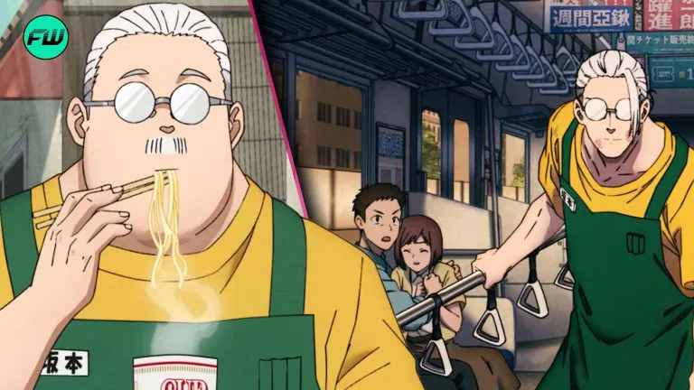
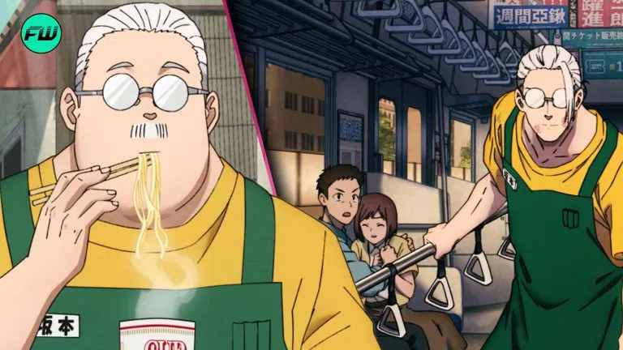

About Sakomoto
Sakomoto is a legendary assassin who retired to become a convenience store owner.
Sakomoto and his double life
Sakomoto's characteristics
- He's insanely strong
- He loves food
- He loves his wife and daughter
- He doesn't talk a lot
Sakomoto is a legendary assassin who retired to become a convenience store owner.
Sakomoto and his double life